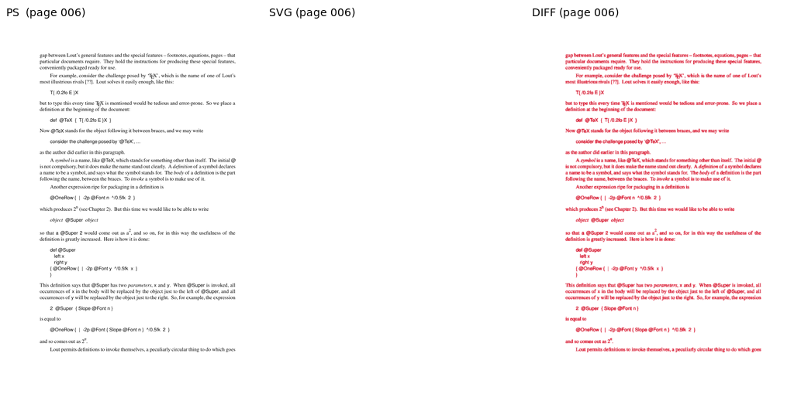
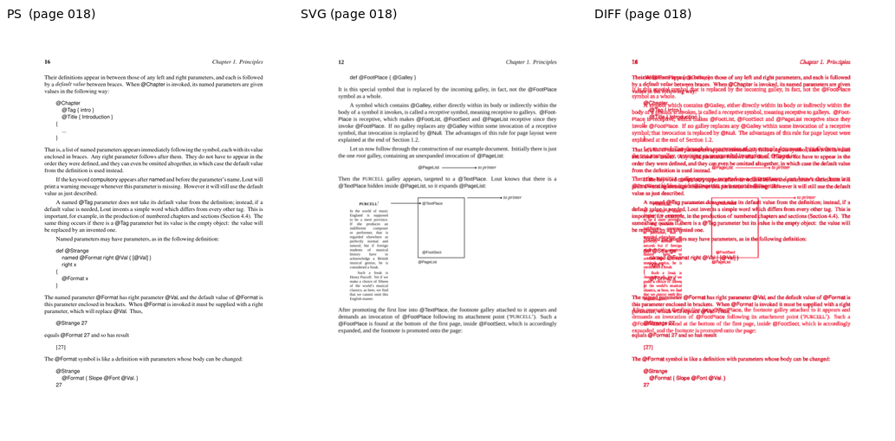
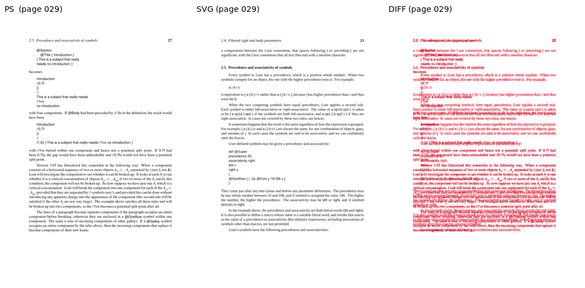
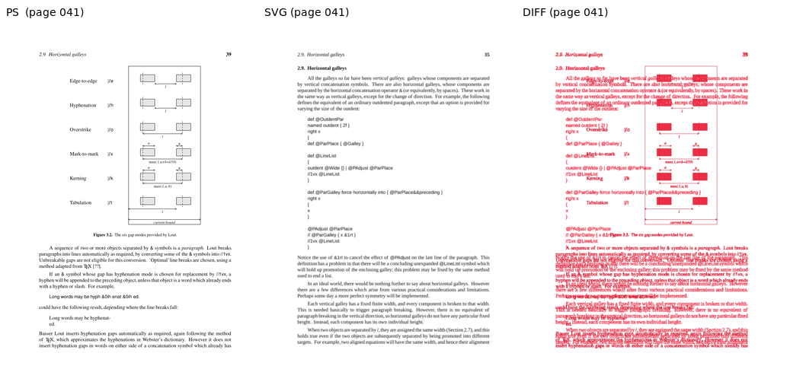
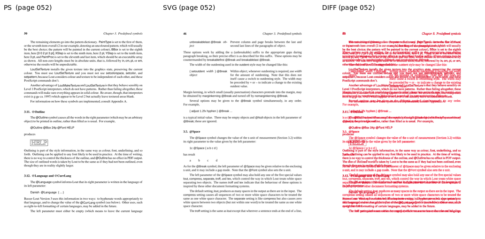
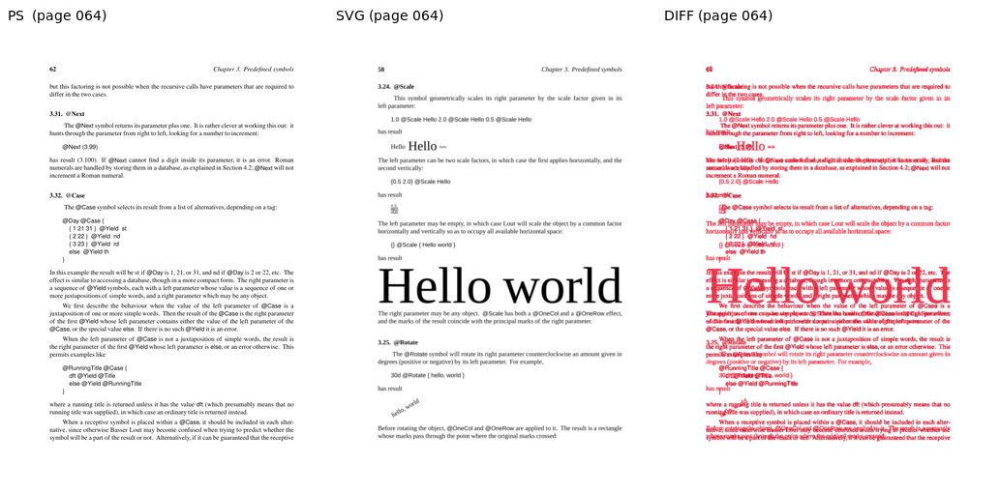
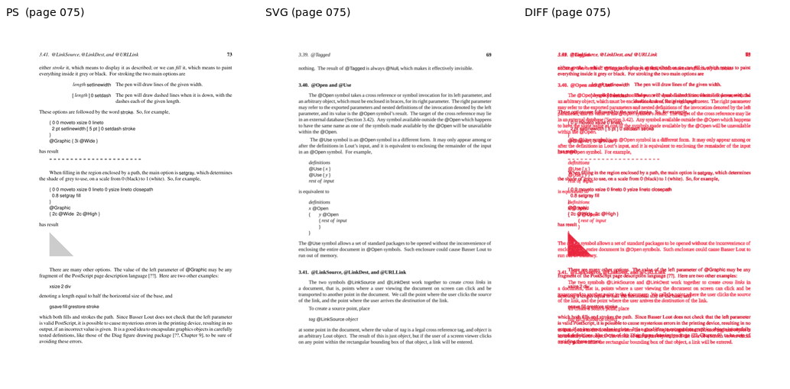
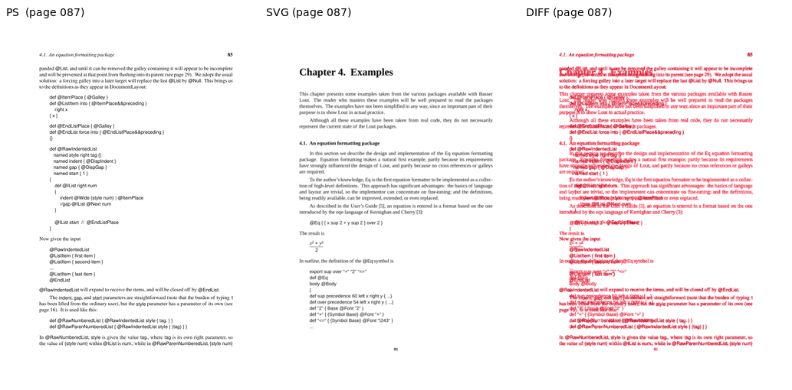
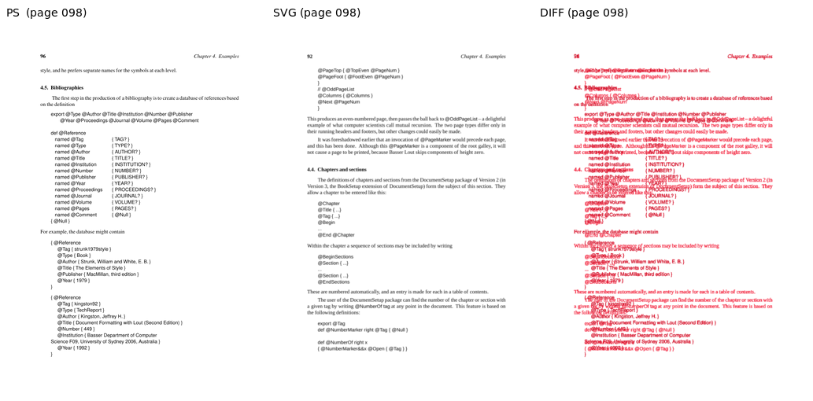
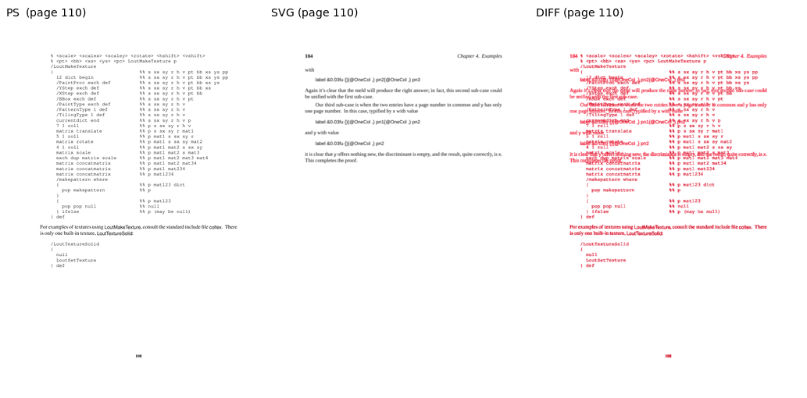

Sampled pages, rendered via both the PostScript pipeline (lout + ps2pdf + pdftoppm) and the SVG pipeline (lout -G via z53.c + rsvg-convert). AE = ImageMagick absolute-error pixel count at 5% fuzz; SSIM is scikit-image structural_similarity on luminance (1.0 = identical).
| Page | W | H | Diff px | Diff % | SSIM | Verdict |
|---|---|---|---|---|---|---|
| 006 | 827 | 1170 | 66616 | 6.88 | 0.7860 | DIFF |
| 018 | 827 | 1170 | 111774 | 11.55 | 0.6898 | DIFF |
| 029 | 827 | 1170 | 126964 | 13.12 | 0.6514 | DIFF |
| 041 | 827 | 1170 | 125664 | 12.99 | 0.6744 | DIFF |
| 052 | 827 | 1170 | 152352 | 15.75 | 0.6127 | DIFF |
| 064 | 827 | 1170 | 117491 | 12.14 | 0.6955 | DIFF |
| 075 | 827 | 1170 | 116145 | 12.00 | 0.6901 | DIFF |
| 087 | 827 | 1170 | 109177 | 11.28 | 0.6966 | DIFF |
| 098 | 827 | 1170 | 98252 | 10.15 | 0.7354 | DIFF |
| 110 | 827 | 1170 | 50919 | 5.26 | 0.8290 | DIFF |









